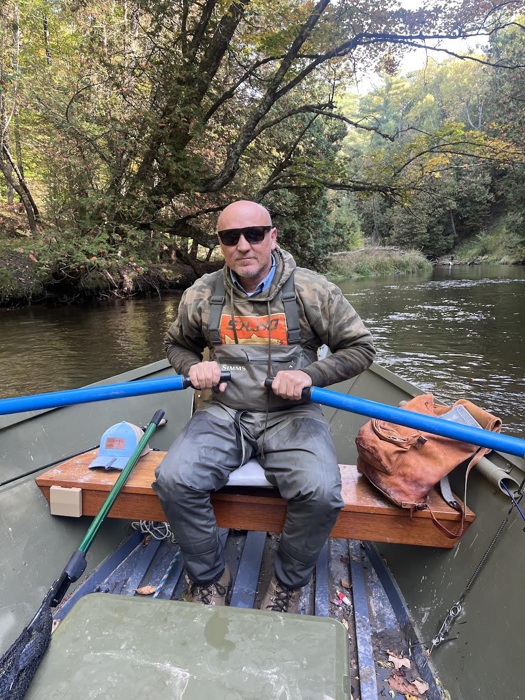
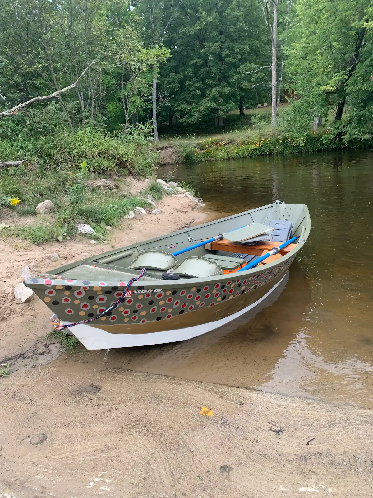
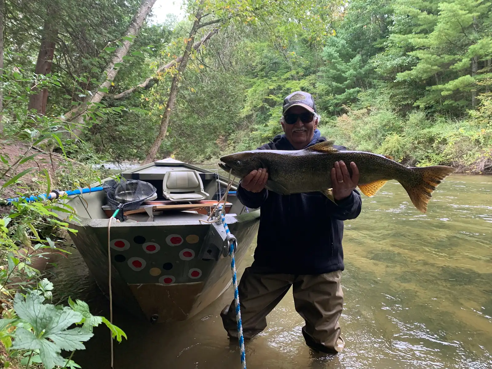
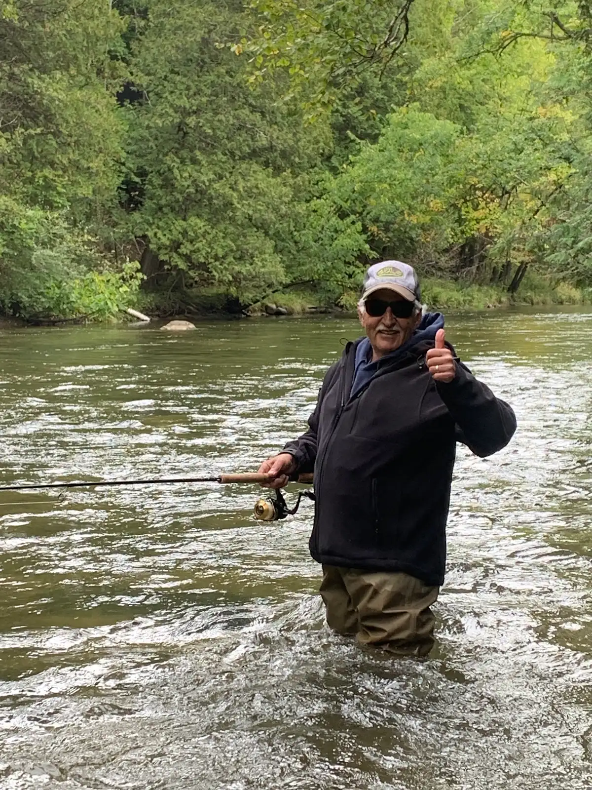

About
Meet Your Guide
For over 30 years, the winding bends, deep gravel runs, and log jams of the Pere Marquette River have been my home water. Now that I’m retired from the daily grind, I didn't want to step away from the river—I wanted to share it. SlammenSalmon.com is built on that exact passion: giving anglers an authentic, unhurried day chasing fall king salmon with someone who knows every inch of this river.


The Boat
The Wooden Drift Boat Advantage
The wooden boat experience is a more nostalgic and relaxed way of fishing the Pere Marquette River, like the days of old. When you step into my boat, you are stepping into an old, traditional wooden McKenzie drift boat. Wood has a unique character on the water—it rides quieter, absorbs the river's current chatter, and offers a much more intimate experience. Because of how quietly a wooden boat handles and how efficiently we move, you see more fish holding in the water and cover a lot more river than you would wading or in a heavier boat. Combined with decades of local know-how, it’s simply the best way to experience the PM.
The River
Our Approach to the Fishery
I am a firm believer in catch-and-release to protect the health and future of the Pere Marquette run, ensuring these waters stay world-class year after year. That said, if you hook into a bright, clean king that you’d proudly want to take home for the dinner table or smoker, you are more than welcome to keep your fish.


Everyone Welcome
All Skill Levels Welcome
Whether you're picking up a rod for the very first time or you're a seasoned angler looking to fine-tune your drift, patience is my number one rule on the boat. There’s zero high-stress pressure here—just a great day on the water and expert guidance to help you land your fish.